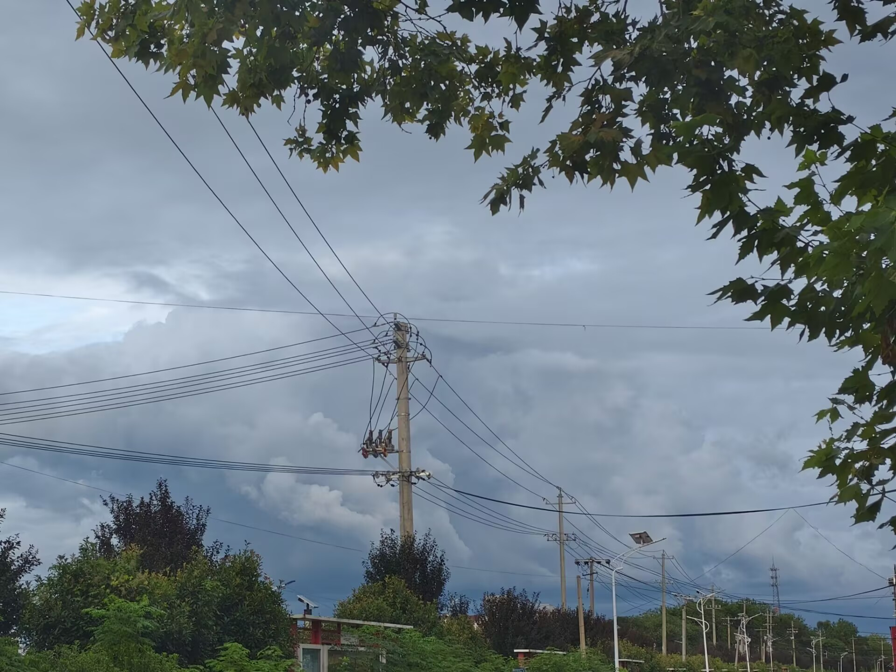
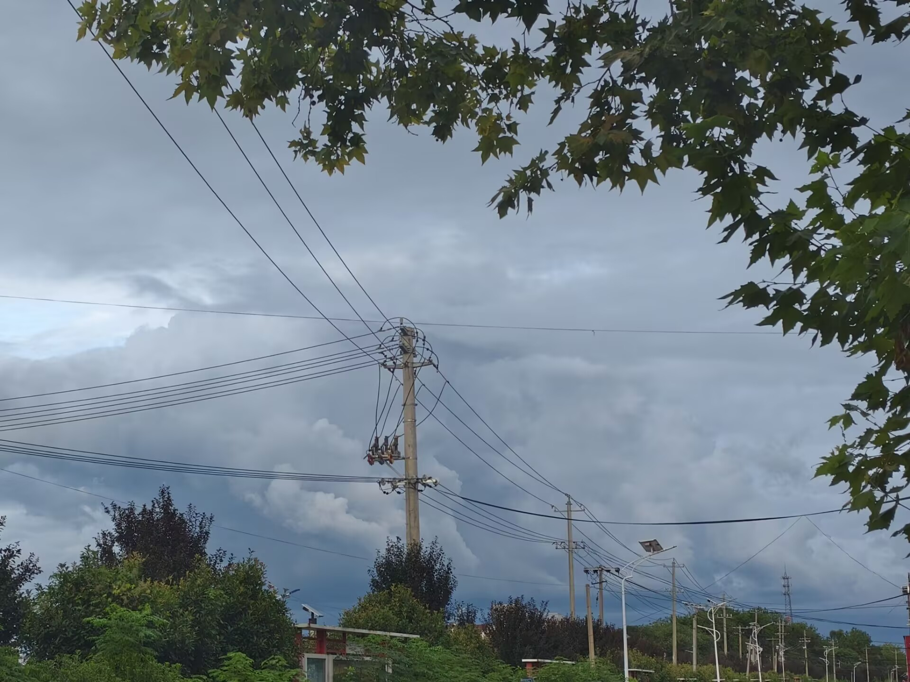

我生长在安徽省安庆市宿松县许岭镇。
说是鱼米之乡，可少了点江南的温婉。若说是北方的豪爽，那却也谈不上。同中国许多普通的小镇一样，许岭似乎没有什么说得出口的特色。街道里的烧饼香，小巷口的霞光，河坝上被风吹动的树影，街坊邻居的嬉笑怒骂。而我，就生活在这样的小镇，这样平凡的时光褶皱里。
镇上的人，活得像土地一样具体。他们不信虚的，只信手里的茧，信碗里的饭，信能供出一个名牌大学生来，就是最大的体面。他们的善良和计较，都明晃晃地摆在日头下，晒得滚烫。
而我的家，我的父母，便是这个小镇最凝练的注解。妈妈喜欢唠叨，脾气有点急，有点犟，但屋里屋外的事都理得井井有条。爸爸时常是笑着，大嗓门与人谈论着什么，哪家哪户新娶了媳妇，进了新屋，都会引起他一阵笑。他们在被生活所俘虏的同时，也在真正地生活。
而我，是从许岭的泥土里，长出来的一株庄稼。我的根，须须蔓蔓，牢牢地抓着那三条街，两条巷，抓着那片又浑又黄的水。
从许岭到珞珈山，有二百二十多公里。这是我用笔尖，一步一步丈量出来的。
浪浪山的小妖怪，从山里走了出来。
但焉知，这里不会是另一座浪浪山。
因此，我永远不会抵达。
我也永远不会停下。

 
